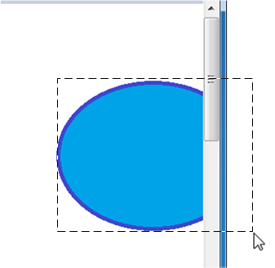
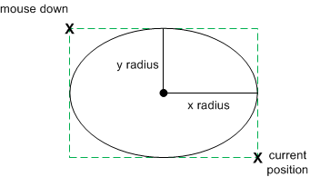

When the mouse moves, Windows posts a WM_MOUSEMOVE message. By default, WM_MOUSEMOVE goes to the window that contains the cursor. You can override this behavior by capturing the mouse, which is described in the next section.
The WM_MOUSEMOVE message contains the same parameters as the messages for mouse clicks. The lowest 16 bits of lParam contain the x-coordinate, and the next 16 bits contain the y-coordinate. Use the GET_X_LPARAM and GET_Y_LPARAM macros to unpack the coordinates from lParam. The wParam parameter contains a bitwise OR of flags, indicating the state of the other mouse buttons plus the SHIFT and CTRL keys. The following code gets the mouse coordinates from lParam.
int xPos = GET_X_LPARAM(lParam);
int yPos = GET_Y_LPARAM(lParam);
Remember that these coordinates are in pixels, not device-independent pixels (DIPs). Later in this topic, we will look at code that converts between the two units.
A window can also receive a WM_MOUSEMOVE message if the position of the cursor changes relative to the window. For example, if the cursor is positioned over a window, and the user hides the window, the window receives WM_MOUSEMOVE messages even if the mouse did not move. One consequence of this behavior is that the mouse coordinates might not change between WM_MOUSEMOVE messages.
By default, a window stops receiving WM_MOUSEMOVE messages if the mouse moves past the edge of the client area. But for some operations, you might need to track the mouse position beyond this point. For example, a drawing program might enable the user to drag the selection rectangle beyond the edge of the window, as shown in the following diagram.

To receive mouse-move messages past the edge of the window, call the SetCapture function. After this function is called, the window will continue to receive WM_MOUSEMOVE messages for as long as the user holds at least one mouse button down, even if the mouse moves outside the window. The capture window must be the foreground window, and only one window can be the capture window at a time. To release mouse capture, call the ReleaseCapture function.
You would typically use SetCapture and ReleaseCapture in the following way.
Let's extend the Circle program from Module 3 by enabling the user to draw a circle with the mouse. Start with the Direct2D Circle Sample program. We will modify the code in this sample to add simple drawing. First, add a new member variable to the MainWindow class.
D2D1_POINT_2F ptMouse;
This variable stores the mouse-down position while the user is dragging the mouse. In the MainWindow constructor, initialize the ellipse and ptMouse variables.
MainWindow() : pFactory(NULL), pRenderTarget(NULL), pBrush(NULL),
ellipse(D2D1::Ellipse(D2D1::Point2F(), 0, 0)),
ptMouse(D2D1::Point2F())
{
}
Remove the body of the MainWindow::CalculateLayout method; it's not required for this example.
void CalculateLayout() { }
Next, declare message handlers for the left-button down, left-button up, and mouse-move messages.
void OnLButtonDown(int pixelX, int pixelY, DWORD flags);
void OnLButtonUp();
void OnMouseMove(int pixelX, int pixelY, DWORD flags);
Mouse coordinates are given in physical pixels, but Direct2D expects device-independent pixels (DIPs). To handle high-DPI settings correctly, you must translate the pixel coordinates into DIPs. For more discussion about DPI, see DPI and Device-Independent Pixels. The following code shows a helper class that converts pixels into DIPs.
class DPIScale
{
static float scale;
public:
static void Initialize(HWND hwnd)
{
float dpi = GetDpiForWindow(hwnd);
scale = dpi/96.0f;
}
template <typename T>
static D2D1_POINT_2F PixelsToDips(T x, T y)
{
return D2D1::Point2F(static_cast<float>(x) / scale, static_cast<float>(y) / scale);
}
};
float DPIScale::scale = 1.0f;
Call DPIScale::Initialize in your WM_CREATE handler, after you create the Direct2D factory object.
case WM_CREATE:
if (FAILED(D2D1CreateFactory(D2D1_FACTORY_TYPE_SINGLE_THREADED, &pFactory)))
{
return -1; // Fail CreateWindowEx.
}
DPIScale::Initialize(hwnd);
return 0;
To get the mouse coordinates in DIPs from the mouse messages, do the following:
DPIScale::PixelsToDips to convert pixels to DIPs.Now add the message handlers to your window procedure.
case WM_LBUTTONDOWN:
OnLButtonDown(GET_X_LPARAM(lParam), GET_Y_LPARAM(lParam), (DWORD)wParam);
return 0;
case WM_LBUTTONUP:
OnLButtonUp();
return 0;
case WM_MOUSEMOVE:
OnMouseMove(GET_X_LPARAM(lParam), GET_Y_LPARAM(lParam), (DWORD)wParam);
return 0;
Finally, implement the message handlers themselves.
For the left-button down message, do the following:
void MainWindow::OnLButtonDown(int pixelX, int pixelY, DWORD flags)
{
SetCapture(m_hwnd);
ellipse.point = ptMouse = DPIScale::PixelsToDips(pixelX, pixelY);
ellipse.radiusX = ellipse.radiusY = 1.0f;
InvalidateRect(m_hwnd, NULL, FALSE);
}
For the mouse-move message, check whether the left mouse button is down. If it is, recalculate the ellipse and repaint the window. In Direct2D, an ellipse is defined by the center point and x- and y-radii. We want to draw an ellipse that fits the bounding box defined by the mouse-down point (ptMouse) and the current cursor position (x, y), so a bit of arithmetic is needed to find the width, height, and position of the ellipse.
The following code recalculates the ellipse and then calls InvalidateRect to repaint the window.

void MainWindow::OnMouseMove(int pixelX, int pixelY, DWORD flags)
{
if (flags & MK_LBUTTON)
{
const D2D1_POINT_2F dips = DPIScale::PixelsToDips(pixelX, pixelY);
const float width = (dips.x - ptMouse.x) / 2;
const float height = (dips.y - ptMouse.y) / 2;
const float x1 = ptMouse.x + width;
const float y1 = ptMouse.y + height;
ellipse = D2D1::Ellipse(D2D1::Point2F(x1, y1), width, height);
InvalidateRect(m_hwnd, NULL, FALSE);
}
}
For the left-button-up message, simply call ReleaseCapture to release the mouse capture.
void MainWindow::OnLButtonUp()
{
ReleaseCapture();
}